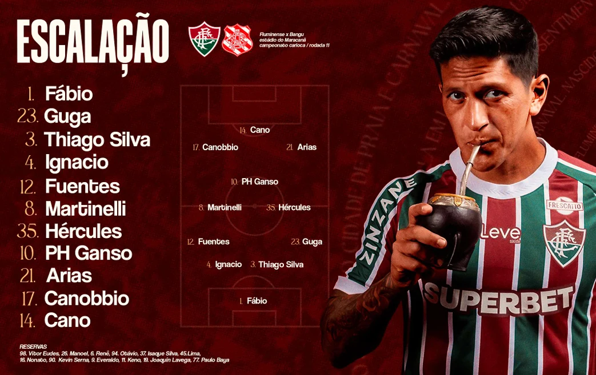
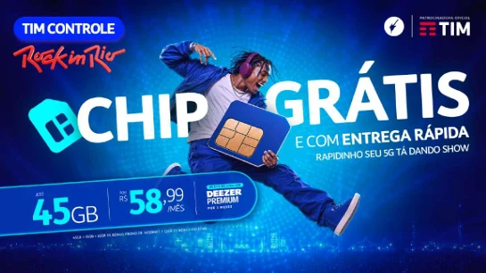
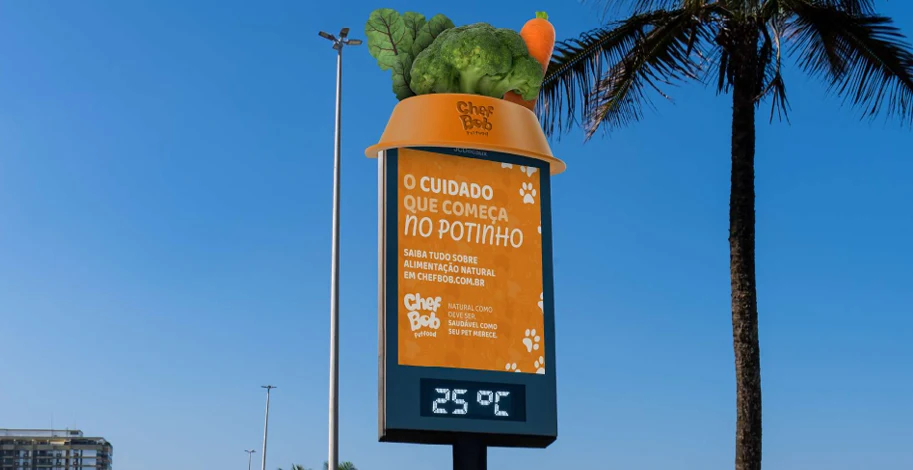
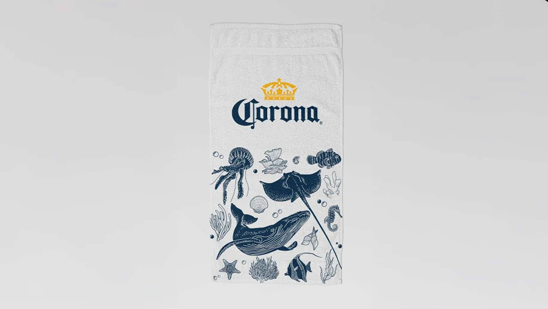
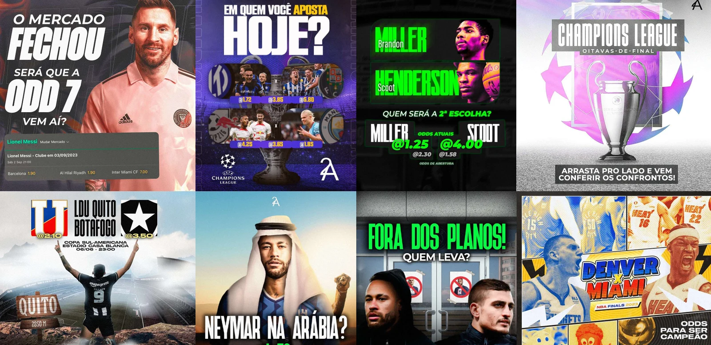
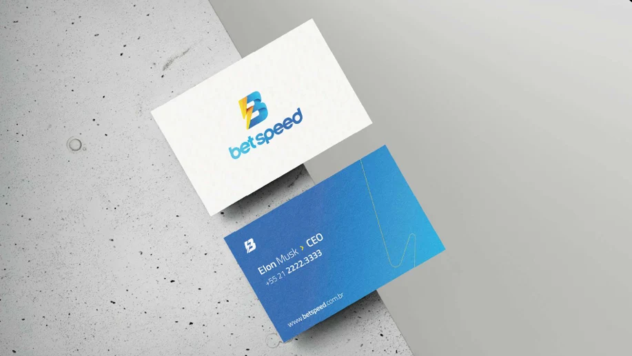

Freelancer na BETC Havas desde julho de 2026
Direção de arte para campanhas
Miguel Santa Rosa cria KVs, campanhas e identidades visuais. Hoje cuida da direção de arte da TIM Brasil na BETC Havas.

6 cases de campanha, marca e redes
- TIM Controle × Rock in Rio
KV do chip grátis da TIM Brasil.
Direção de arte - Chef Bob
Painel de rua com termômetro.
Direção de arte - Corona
Toalha de praia ilustrada.
Direção de arte - Fluminense: escalação
Arte de escalação para o dia do jogo.
Redes sociais - Redes sociais: esportes
Série de posts de futebol e apostas.
Redes sociais - BetSpeed
Identidade e cartões de visita.
Identidade





3 frentes de trabalho
O que entrego, do KV ao post.
- Direção de arte de campanhas
KVs da TIM Brasil, do Dia dos Pais à Black Friday.
- Identidade visual
Branding e KVs, incluindo a Ambev.
- Conteúdo para redes sociais
Posts em série, de 300 mil a 3 milhões de seguidores.
Hoje
Faço a direção de arte da conta TIM Brasil na BETC Havas: KVs e desdobramentos de campanhas como Rock in Rio, Black Friday, Dia do Cliente e os dobráveis da Samsung.
5 empresas e uma faculdade
Da gestão de conteúdo ao KV de campanha.
- BETC Havas
Diretor de arte, conta TIM Brasil.
Jul 2026 a hoje - Oner Travel
Ativos de Moto GP e Fórmula 1.
Jan a Jun 2026 - OnOff
Branding e KVs, incluindo Ambev.
Jun 2024 a Dez 2025 - Betspeed
UI e UX, mais de 40 mil usuários.
Mar a Nov 2023 - Grupo Dupla
Conteúdo para redes sociais.
Jul 2022 a Nov 2023 - Estácio de Sá
Publicidade e Propaganda, em Niterói.
Formatura em 2026.2